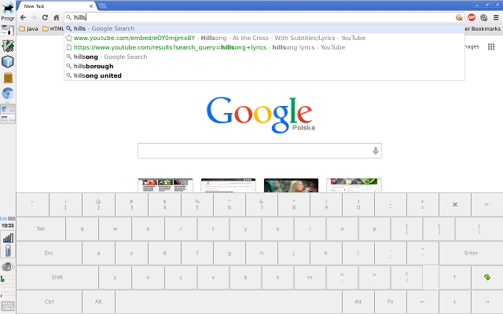

Virtual keyboard
Cube U30GT-H with Debian and XFCE desktop:

The keboard icon on the left bottom corner of the screen shows/hides the virtual keyboard. It is a panel launcher with the following command:
virtual-keyboard -x 40 -toggle -rightalt "aa,cc'ee,ll/nn'oo'ss'zz.xz'"
The -x 40 option moves left edge of the keyboard 40 pixels from the left edge of the screen,
so the keyboard window does not overlap with panel.
-toggle option causes that keyboard is shown and then hidden, every second touch of the
icon.
The -rightalt option sets a set of international characters available after press of right Alt.
In this case it is a set of characters for the Polish language.
The argument constists of 3-character sequences. First character is the key, which the character should be
assigned to. Subsequent two characters is the character compose sequence. See for example
Compose key on Wikipedia
for more information about compose key sequences.